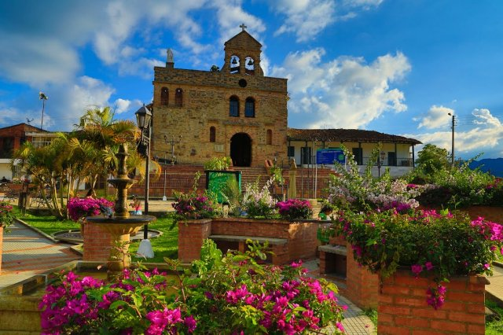

BLOG INFORMATIVO
Viva experiencias memorables
En su destino de viaje
Experiencias en el municipio del Socorro
Está ubicado a 121 km de Bucaramanga hacia el sur de Santander. Lo va a encontrar luego de pasar San Gil, a unos 30 minutos en carro, bus o moto. Otra opción es visitar la plaza de mercado del Socorro ubicada en la calle 13 # 16 – 13 donde encontrará diferentes opciones de comida típica santandereana a muy buenos precios y con restaurantes de tradición. Allí se deleitará con sancocho, carne oreada, mute, caldo de huevo, arepa amarilla, masato, guarapo, aguapanelita, tamal, entre otras deliciosas de la tierrita ¡Qué joda pa’estar buena! Tragazón es lo que hay pa’llenarse el buche.
Experiencias en el municipio de Guadalupe
Con playas de arenas blancas, picos volcánicos y parques protegidos, además de algunos de los sitios de buceo más impresionantes del mundo, Guadalupe es un paraíso para quienes van de isla en isla. Este archipiélago francés es uno de los secretos mejor guardados del Caribe, que ofrece una alternativa más relajada a sus vecinos más conocidos. Las piscinas naturales “Las Gachas” en Guadalupe son un fenómeno natural único. El color rojizo de las rocas hace de este sitio un lugar perfecto para tomar increíbles fotos. También, disfrutará la oportunidad de conocer todas las partes del “río rojo” que tiene una extensión de casi 1 km.
Experiencias en el municipio de Gambita
Es un municipio para explorar, descansar, conocer de historia, cultura y tradiciones santandereanas. Que cuenta con una increíble diversidad natural que es quizás el mayor atractivo y que a su vez ofrece el mejor escenario para llevar a cabo deportes extremos. Gámbita, es un destino integral que si te apasionan las cascadas, encontrarás entre muchas El manto de la Virgen y La Humeadora que no dejaran de sorprender a quien las visite. Todo esto que con su gente quiere dejar en ti una de las mejores experiencias, por eso no te pierdas el recorrido brindado por guías locales, quienes cuentan con la mejor información y la experiencia haciendo del viaje la mejor forma de conocer una región con toda su cultura, historia y demás.
Experiencias en el municipio de Giron
A 9 km de Bucaramanga, hacia el sur, se llega a Girón, un municipio que hace parte de la Red de Pueblos Patrimonio de Colombia. Una de las razones por las que la llamada ‘ciudad blanca’ pertenece a esta lista es el buen estado en que se han conservado las 46 manzanas de su zona colonial, donde casas de los siglos XVI, XVII y XVIII y calles empedradas ayudan a que los visitantes hagan un viaje en el tiempo. Este plato grande y grasoso no tiene una receta exacta, sus ingredientes son variados aunque sus infaltables productos son el lomo de cerdo, la papa criolla, el chorizo, la morcilla y el chicharrón.